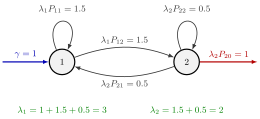

Traffic Equations¶
Proposition¶
Consider an open network of stations. New jobs arrive from outside at station with rate . After service at station a job moves to station with probability , independently of everything else (Markov routing), and it leaves the network with probability . Let be the total arrival rate at station , external and internal together. If every station is rate stable, so that its departure rate equals its arrival rate, , then the traffic equations hold:
With the row vectors and and the routing matrix , this is the linear system . When is invertible, its unique solution is .
Interpretation¶
The traffic equations are bookkeeping for flows. Jobs reach station from outside at rate and from every station , including itself. A stable station passes on everything it receives, so station releases jobs at rate , and the share of them goes to .

The figure shows the network of Example 1, each arrow labelled with its flow rate . At station 1 the inflows add up to , at station 2 the inflows add up to , and the flow out of the network equals the external input.
Rate stability turns the output of station into ; an overloaded station releases jobs at most at its capacity, and then the equations no longer describe the real flows. Markov routing makes the long-run fraction of departures from that go to equal to . No exponential or Poisson assumption is needed, but the equations do not prove stability either: one still checks that every load satisfies . The notes reach the same equations by following Poisson streams through stations, split by the routing and merged at the next station.
The most common slip is the index order: the flow into uses the column entries , not the row . Another is to expect to be at most the total external rate; with feedback a job visits a station several times, so in the figure. Dividing by the total external rate gives the visit ratio.
Key Results¶
- Network output. Summing the traffic equations over and using gives , where . The network as a whole releases jobs at the total external rate, whereas a single station has .
- Solution by iteration (Section 7.4, optional reading). Starting from , the iteration gives . The sum converges when is transient, that is, when a job can leave the network from every station within steps; the limit is .
- Stability check. The network can only be stable if at every single-server station, or at a station with servers.
- Tandem line. With for , and all external jobs entering at station 1, every station has ; here (Exercise 7.4.1). See tandem queue.
- Two stations with feedback (Exercise 7.3.3). With external rate into station 1, , , and , the solution is and , valid for and . As the rate at station 1 explodes.
Examples¶
1. Two stations with feedback. Take Exercise 7.3.3 with job per hour, and , so . The equations are and . The second gives , so . Substituting into the first, , so and , as the formula in Key Results gives: and . The network releases job per hour, equal to . With hours and hours, the loads are and , both below one.
2. No way out. Change station 2 to , so that and no job ever leaves. The second equation becomes , so , and the first becomes , which has no solution. Here every row of sums to one, , and jobs pile up in the network without bound.
3. A solution is not a proof of stability. Keep the routing of Example 1 but let hours. The traffic equations still give , yet : station 1 can complete at most jobs per hour, its queue grows, and the computed rates are not the actual flows. The network is stable only if hours and hour.
Prerequisites¶
Related Concepts¶
- Open Queueing Network
- Visit Ratio
- Jackson Product Form
- Server Load
- Tandem Queue
- Closed Queueing Network
- Poisson Merging
- Poisson Splitting
Sources¶
- Stochastic Operations Research · Week 7
- N. D. van Foreest, Sample Path Analysis and Simulation of Stochastic Systems, Section 7.3
Aliases: flow balance equations of a network, network rate equations, λ = γ + λP, lambda equals gamma plus lambda P Keywords: \lambda = \gamma + \lambda P, \lambda_i = \gamma_i + \sum_j \lambda_j P_{ji}, external arrival rate, \gamma_i, routing matrix, (I-P)^{-1}, Markov routing, open queueing network, feedback, station arrival rate Symbols: alpha, beta, delta, gamma, lambda, rho, sum
Last updated: 29 October 2026 20:42
Traffic EquationsJackson Product FormOpen Queueing NetworkVisit RatioRouting MatrixRate StabilityArrival and Departure RatesSystem of Linear EquationsServer LoadTandem QueueClosed Queueing NetworkPoisson MergingPoisson Splitting